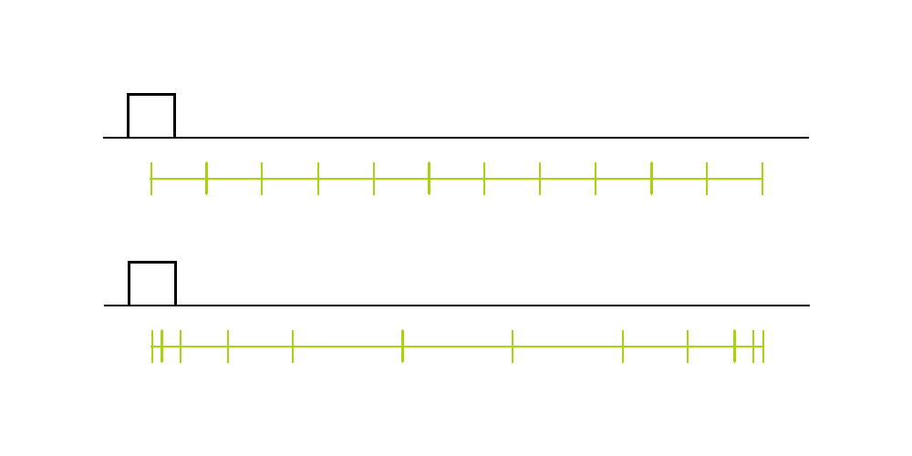
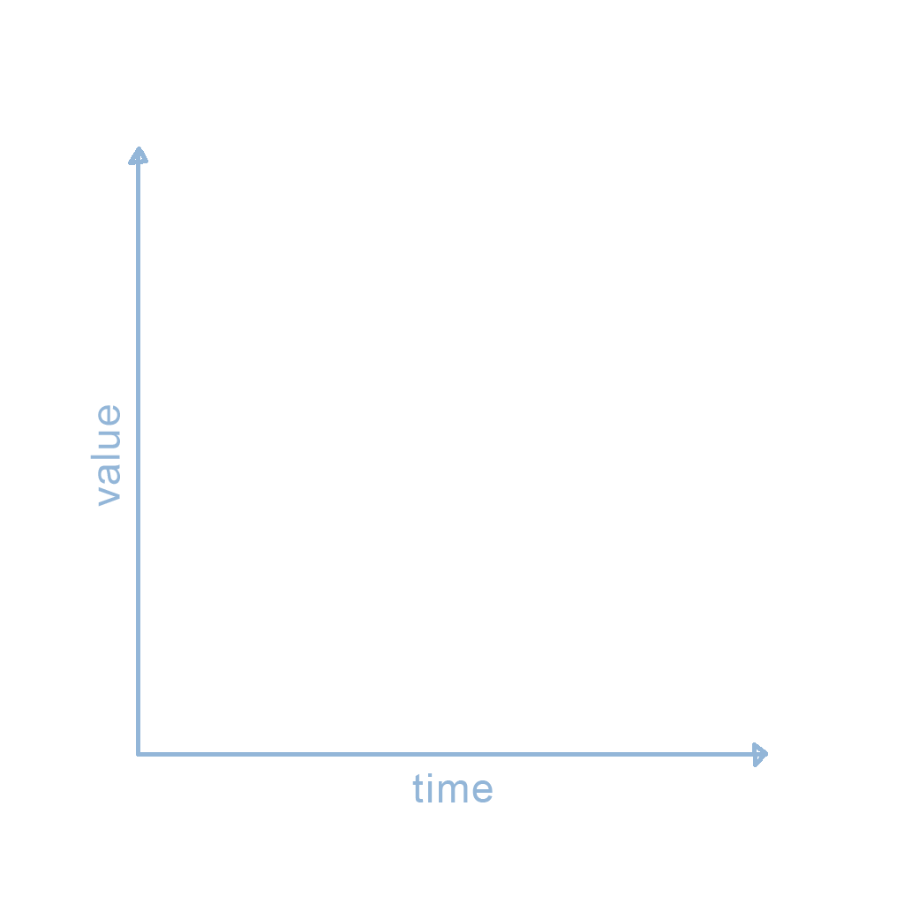
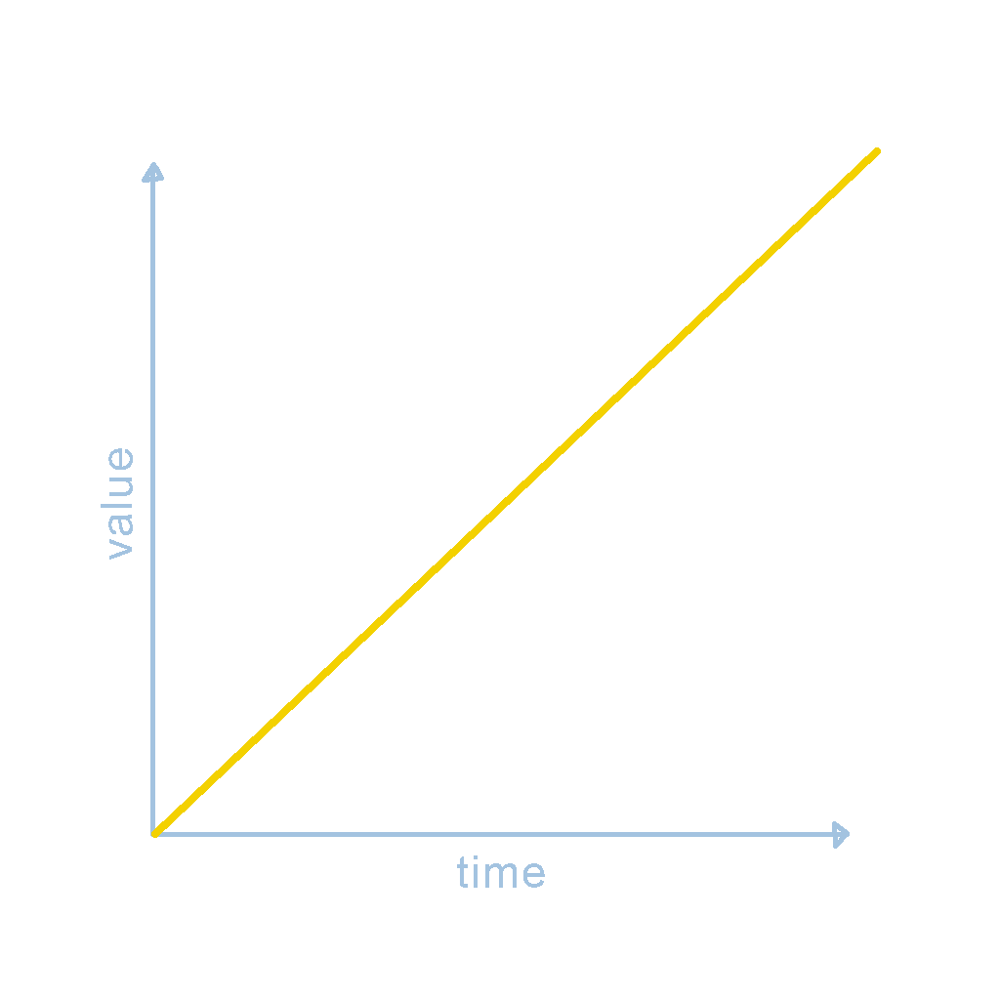

<!DOCTYPE html>
<html lang="en" dir="ltr">
  <head>
    <meta charset="utf-8">
    <title>ADSN-425</title>
  </head>
  <body>

  </body>
</html>
<head>
  <link rel="stylesheet" type="text/css" href="style.css">
</head>

<body>
  <div class="top">
    <p class="date">Sep 7</p>
    <p class="title">Animation Curves + AfterEffects</p>
    <p class="course">3D Graphics + Animation</p>
  </div>

  <div class="slide">
    <div class="content">
      <p class="big">Animation Curves + AfterEffects</p>
      <h2 class="centered">September 7, 2020</h2>
    </div>
  </div>


  <div class = "slide">
    <div class ="content">
      <h1>Agenda</h1>
      <ol>
        <li>Timing chart review</li>
        <li>Understanding charts and graphs</li>
        <li>Animation (bezier) curves</li>
        <li>Break</li>
        <li>AE – making a new project and comp</li>
        <li>AE – importing .ai or .psd</li>
        <li>AE – timeline and keyframes</li>
        <li>AE – graph editor</li>
        <li>AE – simple export</li>
      </ol>
    </div>
  </div>

  <div class = "slide">
    <div class = "content">
      <p class="mid">Timing & Spacing</p>
      <p class="des">Timing is the number of frames (drawings) that it takes for an action to occur.</p>
      <p class="des">Spacing is the amount of difference (space) between consecutive frames.</p>
    </div>
  </div>

  <div class = "slide">
    <div class = "content">
      <p class="mid">Slow In & Slow Out</p>
      <p class="des">Many types of motion feel more natural and satisfying with acceleration (slow in) and deceleration (slow out).</p>
      <p class="des">This is acheived by bunching up the drawings at the beginnings and ends of actions.</p>
    </div>
  </div>

  <div class = "slide">
    <div class = "content">
      
    </div>
  </div>

  <div class = "slide yellow">
    <div class = "content alt">
      <h1>From Timing Charts to Graphs</h1>
      <p>In animation a graph is a representation of the way any value changes over time.</p>
      
    </div>
  </div>

  <div class = "slide yellow">
    <div class = "content alt">
      
    </div>
  </div>

  <div class = "slide">
    <div class = "content assignment">
      <h1>AfterEffects Follow Along #1</h1>
      <p>Create a basic animation using AfterEffects and an imported logo. You will use keyframes to animate a layer's transform &ndash; the position, scale, and rotation. You will also use the graph editor and easing to bring these animations to life.</p>
      <p>&nbsp;</p>
      <h3>Format</h3>
      <ul>
        <li>1920 &times; 1080 pixels @ 24 frames per second</li>
        <li>Exactly 2 seconds long</li>
      </ul>
      <p>&nbsp;</p>
      <h3>Animation</h3>
      <ol>
      <li>Starts with a blank, dark blue background</li>
      <li>The logo slides in from the left, decelerates, and settles in the center of composition on the 12th&nbsp;frame</li>
      <li>The logo wiggles its rotation until 1.25 seconds</li>
      <li>The logo quickly swipes of the screen to the right, and is totally gone by 2 seconds</li>
      </ol>
      <p>&nbsp;</p>
      <p>Export the video file (.mov on Mac or .mp4 on Windows) and upload on Canvas so I can check how everyone is doing with AE.</p>
      <p>&nbsp;</p>
      <h3>Due</h3>
      <p>Wednesday, Sep 9 @ midnight</p>
    </div>
  </div>


</body>
</html>
